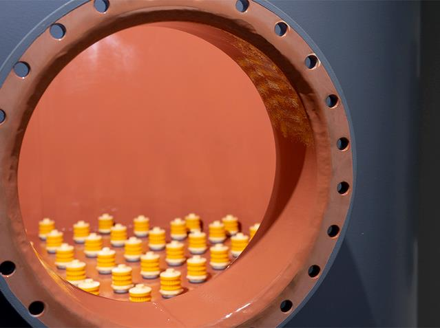
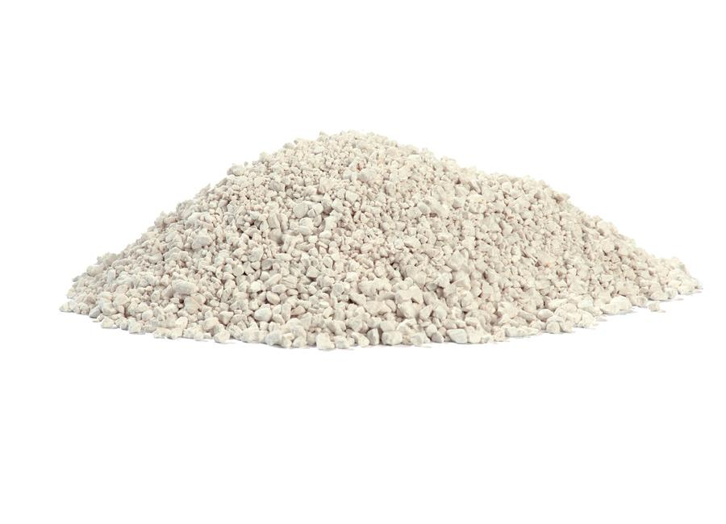
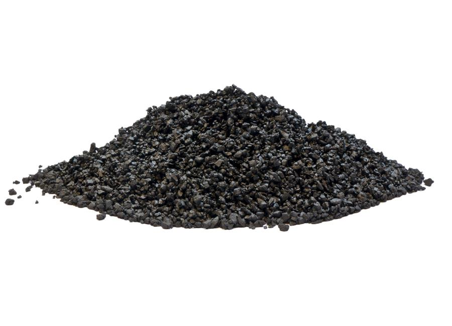

Напорные фильтры
Напорный фильтр это закрытая емкость с однородной или комбинированной загрузкой для удаления одного или нескольких загрязнений. У нас есть доступ к более чем десяти различным фильтрующим материалам от наших поставщиков для удаления железа, марганца, аммония и агрессивных веществ на водопроводных станциях, на предприятиях и в частных домах.
Независимо от того, нужна Вам питьевая вода или вода для коммерческого или промышленного использования, вода должна быть очищена, для достижения требуемого качества. Сложность обработки зависит от качества исходной воды и требованиям к воде на выходе.
Одна установка – много применений
Водоканалы и компании / потребители с собственным водозабором, нуждающиеся в качественной питьевой воде, используют напорную фильтрацию для снижения содержания металлов и солей. Благодаря индивидуально подобранным слоям фильтрующего материала напорные фильтра могут использоваться в различных областях применения.
- железо, марганец, аммоний
- агрессивный углекислый газ
- пестициды
- мышьяк
- дехлорирование воды
- повторное использование технологической воды
- фильтрация морской воды
- percolate filtration
- взвешенные вещества
- сбор слизистых частиц
- финальная фильтрация сточных вод
Естественная обработка без химикатов
В НапорныхфильтрахEUROWATER применяютсятолько естественныепроцессыдля производства питьевой воды, такиекак окисление и фильтрация. Преимущества использования только воздуха для окисления и фильтрации:
-
Хорошая рабочая среда
Рабочая среда очень безопасна без обращения с опасными химикатами и их хранения. - Нет проблем со сточными водами
Напорные фильтры EUROWATER рассчитаны на низкий расход воды для промывки, и промывная вода не является вредной. Следовательно, нет риска загрязнения сточных вод химическими реагентами. - Совершенно безопасная эксплуатация
Отсутствие риска попадания химических остатков в питьевую воду. - Простота в использовании
Дозирование химикатов подразумевает сложности в эксплуатации и обслуживании, а также контроле и мониторинге.
Обзор продукта
Ассортимент нашей продукции включает в себя большое количество стандартных установок, спроектированных и изготовленных на собственном производстве. Отправной точкой является наша модульная стандартная система, обеспечивающая высокую гибкость, высокую надежность в эксплуатации и короткие сроки поставки. Каждое решение может быть индивидуальным и построенным в соответствии с конкретным применением путем подбора материалов, контрольно-измерительных приборов и системы управления - на основе нашего совместного ноу-хау.
Конструкция установки
Установки напорной фильтрации доступны с ручной или автоматической обратной промывкой. Корпус фильтра изготавливается из стали или нержавеющей стали. Внутри фильтр защищен от коррозии в зависимости от выполняемой работы, подбор
фильтрующего материала зависит от индивидуальных требований. Установки напорных фильтров имеют модульную конструкцию, что позволяет варьировать и комбинировать компоненты в соответствии с Вашими потребностями.
Свяжитесь с Вашим местным офисом продаж и обслуживания для получения дополнительной информации, технических паспортов или инструкций.
Производительность до 12 м3/ч
Ручной/автоматический напорный фильтр типа NS/NSB
7 стандартных модулей
Производительность до 100 м3/ч
Ручной/автоматический напорный фильтр типа TF/TFB
22 стандартных модуля
Высокопрочный фильтр с надлежащим покрытием поверхности
Корпуса фильтров изготовлены из стали и поэтому чрезвычайно прочны и менее чувствительны к изменениям давления. Соотношение стали и надлежащего покрытия поверхности делает их очень прочными и долговечными.
Состав воды и температура определяют выбор покрытия поверхности. Покрытие поверхности подразделяется на внутреннее и внешнее покрытие.
Нержавеющая сталь
Внутри / снаружи
Нержавеющая сталь класса 316L.
Наружная обработка: Травление, пескоструйная обработка и пассивация.
Обработка внутрь: Травление
Эпоксидная краска
Снаружи
Обычно покрытие внешней поверхности выполняется пескоструйной очисткой и эффективной грунтовкой, после чего наносится синтетическая эмаль в цвете по шкале RAL. Категория коррозии очень высокая (C5-I).
Покрытие
Внутри
Внутри фильтра могут быть без покрытия, либо с покрытием, в зависимости от применения. Особые требования по гигиене и разрешенияна питьевую воду так же должны быть соблюдены.

PPA
Внутри / снаружи
Некоторые фильтры доступны с покрытием PPA как внутри, так и снаружи. PPA - это высокоэффективное покрытие на основе полиэтилена с превосходной стойкостью к УФ, химическим веществам и коррозии (высшая категория коррозии C5-M).
Плита с форсунками обеспечивает бесперебойную работу
Эффективная обратная промывка - один из ключевых элементов непрерывной и безотказной работы. Напорный фильтр EUROWATER оснащен плитой с форсунками специальной конструкции. Она обеспечивает равномерное распределение для оптимального использования фильтрующего материала, а также корректную обратную промывку.
В работе
Исходная вода подается в фильтр (2) и смешивается с сжатым воздухом (1).
Плита с форсунками внизу гарантирует, что аэрированная вода равномерно проходит через фильтрующий материал. Очищенная вода подается потребителю (4).
Продувка воздухом
Включаются впускной и выпускной клапаны, и через форсунки (6) в фильтр подается воздух.
Форсунки распределяют воздух. Турбулентность разжижает частицы, осевшие на фильтрующем материале. Вода направляется в канализацию (3).
Обратная промывка водой
Вода для промывки подается в фильтр (5) снизу, и плита с форсунками равномерно ее распределяет.
Отделившиеся отложения вымываются из фильтра в канализацию (3). Впускной и выпускной клапаны снова переключаются в рабочий режим
Преимущества плиты с форсунками
Фильтрующий материал, подобранный для Вашей станции водоподготовки
Выбор фильтрующего материала - ключ к достижению необходимого качества воды. Nevtraco® и Demantex® - это фильтрующие материалы, производимые EUROWATER. Таким образом, мы можем гарантировать Вам фильтрующие материалы самого высокого качества.
Nevtraco®
Nevtraco в основном используется для удаления железа, но также может использоваться для удаления аммония и нитрита. Среда основана на извести и имеет ряд преимуществ:
- Очень высокая производительность
- Низкое потребление воды для промывки
- Изготовлен из мшанковой извести
- Нейтрализация агрессивного углерода

Demantex®
Demantex оказался очень эффективным материалом для удаления марганца - даже в сложных условиях с низкими значениями pH. Этот природный фильтрующий материал имеет ряд преимуществ:
- Чистый и натуральный диоксид марганца
- Эффективная адсорбция
- Простая обратная промывка
- Разрешено для питьевой воды

Получите знания о фильтрации воды
Мы собрали все, что Вам нужно знать о фильтрации воды. От фильтрующего материала до станции с множеством возможностей и оптимальным решением
See references with pressure filter
Отображение 3 из 58 Референции
Установка обезжелезивания для производства пива
Вода для пивоваренПитьевая водаТехнологическая водаПроизводство напитковПивоварни
Датские гидротехнические сооружения контролируют качество воды в режиме онл...
Питьевая водаВодоканалы
Очистка грунтовых вод 200 м³/ч для производства продуктов питания
Подземные воды проходят фильтрацию под давлением для удаления железа и марганца.
Котловая водаПитьевая водаТехнологическая водаПищевая промышленность
2x60 м³/ч сверхчистой воды для электростанции - WTP в контейнерах 6 x 40 фу...
Котловая водаМобильная очистка водыТеплоэлектростанции
Автономное водоснабжение прачечной
Технологическая водаПромывная водаПрачечныеТекстильная промышленность
Вода для увлажнения при выращивании салата в теплице
В современном производстве салата и овощей важно обеспечить правильные климатические условия.
Вода для увлажненияСельское хозяйство и садоводствоПищевая промышленность
Водоподготовка для молочного завода Arla/Molvest в России
Питьевая водаИнгредиентная ВодаПромывная водаПищевая промышленность
Водоподготовка для солнечной системы отопления
Вода для централизованного теплоснабженияЦентрализованное отопление
Водоподготовка для стекольного завода Туркменистана
Котловая водаОхлаждающая водаПитьевая водаПромывная водаСтекольная промышленность
Деминерализованная вода для пивоварни при низком расходе воды и энергии
Вода для пивоваренИнгредиентная ВодаТехнологическая водаПроизводство напитковПивоварни
Короткие сроки поставки раствора подпиточной воды паровых котлов высокого д...
Котловая водаТехнологическая водаПищевая промышленностьТеплоэлектростанции
Напорные фильтры из нержавеющей стали AISI 316 для водопроводных станций Ha...
Питьевая водаВодоканалы
Обновление и расширение системы очистки воды на заводе-изготовителе кормов ...
Котловая водаТехнологическая водаПищевая промышленность
Очистка воды для парогазовой турбины
Котловая водаВода для централизованного теплоснабженияТеплоэлектростанции
.jpg)
Очистка воды для старейшей пивоварни Словакии
Питьевая водаИнгредиентная ВодаТехнологическая водаПивоварниВодоканалы
.jpg)
Очистка конденсата дымовых газов на ТЭЦ, работающей на биомассе
Очистка конденсата дымовых газовТеплоэлектростанции
.jpg)
Песочные фильтры с резиновым покрытием, устойчивым к морской воде
Котловая водаВода для централизованного теплоснабженияТехнологическая водаТеплоэлектростанции
.jpg)
Подпиточная вода для парового котла высокого давления 2 x 30 м³/ч
Котловая водаВода для централизованного теплоснабженияТеплоэлектростанции
Подпиточная вода для централизованного теплоснабжения
Вода для централизованного теплоснабженияТеплоэлектростанции
Природная минеральная вода в ПЭТ-бутылках, пригодных для вторичной перерабо...
Питьевая водаПроизводство напитков
.jpg)
Промывочная вода для обработки поверхности алюминиевых баллончиков.
Промывная водаМеталлургическая промышленностьПромышленность по обработки поверхностей
.jpg)
.jpg)
Технологическая вода для CIP на молочном заводе в России
Питьевая водаТехнологическая водаПромывная водаПищевая промышленность
Технологическая вода для поставщика бумаги и плотного картона
Котловая водаТехнологическая водаЦеллюлозная и бумажная промышленность
Турбинная вода, охлаждающая вода и питьевая вода на электростанции
Котловая водаОхлаждающая водаТеплоэлектростанции
Удаление железа, умягчение и мембранная фильтрация для пищевой промышленнос...
Котловая водаОхлаждающая водаПромывная водаПищевая промышленность
Установка для очистки воды на птицефабрике
Охлаждающая водаВода для увлажненияСельское хозяйство и садоводство
Фильтрация подземных вод 300 м³/ч для производства крахмала
Котловая водаПитьевая водаИнгредиентная ВодаТехнологическая водаСельское хозяйство и садоводствоПищевая промышленность
Получите оптимальное решение
Выбор установки зависит от области применения, качества и расхода воды. Мы к Вашим услугам найти оптимальное решение на основе нашего ноу-хау. Заполните форму, и мы свяжемся с Вами.